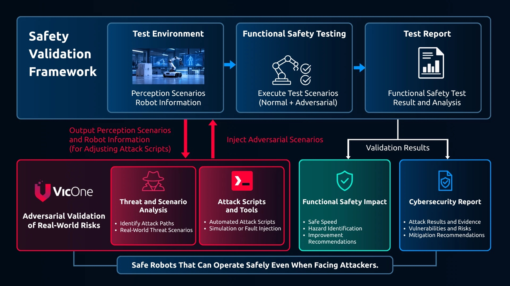
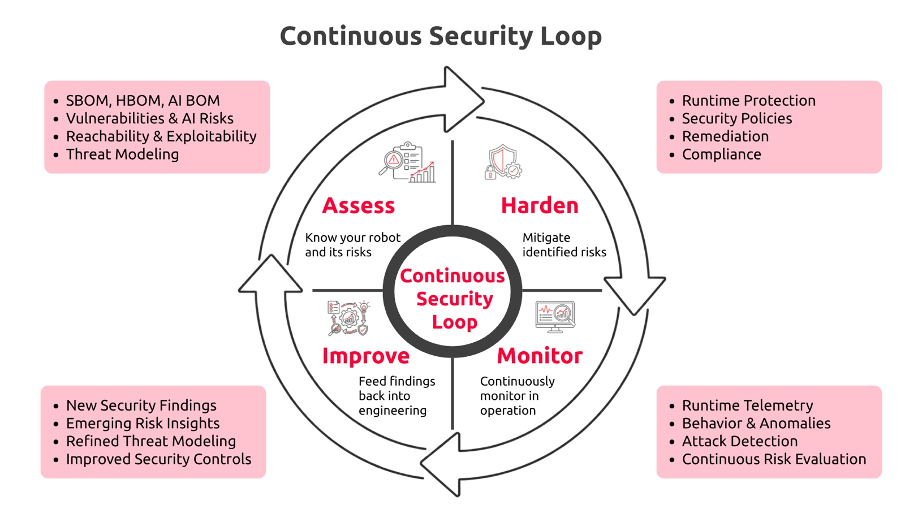

A robot can function as expected relative to the information it receives and still produce an unsafe outcome if that information has been manipulated. Cyber threats add an adversary to the safety equation. They can turn an unlikely event into a repeatable one. Cybersecurity is not only about preventing attacks. It helps robotics teams verify that the digital conditions supporting safe behavior still hold under deliberate manipulation.
Expected Operation Is Not the Same as a Safe Outcome
A robot receives an authorized command to step to the left.
Its software is genuine. The command comes from an approved source. The robot processes that information and executes the movement exactly as expected. But if that step takes the robot off a staircase or an elevated platform, the outcome is still unsafe.
Raised during a DEF CON 34 fireside conversation between Boston Dynamics and VicOne, the scenario exposes an important distinction. Authorization can confirm whether an action is permitted. On its own, it cannot establish whether that action is safe in a fleeting physical context.
For a mobile robot, safety is not a fixed perimeter. The safety boundary moves with the machine. The same step can be harmless on a warehouse floor and hazardous beside a stairwell. As the environment changes, the context required for a safe decision changes with it.
The robot interprets those conditions through cameras and other sensors, AI models, software messages, fleet systems, or human commands. An attacker may not need to disable the robot or seize full control. Manipulating one relevant input may be enough to make an otherwise expected behavior unsafe.
This is where cybersecurity contributes to robot safety assurance. It asks how deliberate manipulation could change physical behavior, helps teams reproduce those conditions in simulation, and provides runtime evidence when operation no longer matches what was validated.
Cyber Threats Rewrite the Odds
Safety engineering already uses simulation to study improbable events that could lead to unsafe conditions. The fireside discussion adds a crucial distinction. An attacker can deliberately create those same conditions.
Under normal conditions, a particular image, software state, or sequence of messages may be unlikely. Under attack, rarity is not the same as protection.
“The whole goal of hackers, or maybe one of the objectives of hackers, is to turn those low-probability events into deterministic, high-probability, highly reliable events.”
— Joman Chu, Product Security Engineering Lead at Boston Dynamics
If an attacker learns how to reproduce a low-probability condition, the same event can be triggered repeatedly and, potentially, at a chosen time. Cybersecurity changes the risk question from whether a rare event might happen to whether someone can make it happen.
That is the specific contribution security brings to safety analysis: intentionality. It helps teams examine whether inputs or components can be manipulated to create physical conditions that safety engineering already considers hazardous.
A Vulnerability Won’t Tell You What the Robot Will Do
Cyber threats can turn an unlikely condition into a repeatable one. But identifying a vulnerability still does not tell a safety team what the robot will do if it is exploited. Will it stop safely, continue operating, or cross a safety boundary? To answer that question, teams need to carry the cyber scenario into the safety validation process.
Cybersecurity extends the existing safety validation framework by turning a plausible attack path into a test condition. Threat and scenario analysis identifies how the robot could be manipulated. An attack script then injects that condition into the same environment used for functional safety testing, allowing teams to compare normal operation with operation under attack. The results show whether safety requirements are violated, which hazards emerge, and whether the controls designed into the robot still hold.

The process begins by separating three questions. Is the vulnerability reachable? Can it be exploited? If it is exploited, which part of the robot’s behavior could change? Reachability analysis establishes the attack path, but it does not establish the physical consequence. A spoofed message, prompt injection, adversarial image patch, or compromised component matters only in relation to the robot behavior it changes.
Software-in-the-Loop simulation connects the cyber event to the robot’s physical behavior. Teams can load the robot model and actual software into a digital twin environment such as NVIDIA Isaac Sim or MuJoCo, reproduce the manipulation, and observe how the robot responds. They can then evaluate whether safety controls still work, whether the robot reaches a safe state, and which compensating controls may be needed.
This approach begins before deployment and can be repeated when new vulnerabilities emerge in the field. Teams can test known vulnerabilities, prompt injection, adversarial visual inputs, and compromised software components in simulation. When a new vulnerability appears, they can reproduce the exploit, assess its effect on the current robot design, and validate an interim policy before an over-the-air patch is available.
Security, robotics, and safety teams each contribute a different part of the assessment. Security teams characterize the exploit. Systems engineers determine how it changes robot behavior. Safety teams evaluate the resulting hazard. Together, they turn a software finding into a decision about the robot and its operation.
Deployment Puts Safety Assumptions to the Test
“So, inherently, the robots need to be continually learning and training, and they’ll be continually getting updates from the manufacturer.”
— Joman Chu, Product Security Engineering Lead at Boston Dynamics
That creates a continuous learning and update loop among the robot, its operating environment, and the manufacturer’s training environment. Operational data returns to the training environment, informs an updated model or behavior policy, and reaches the robot through a new update. The same operational data can also serve as security telemetry, helping teams detect attacks or anomalies and carry those findings back into threat modeling, simulation, and protection.
Deployment does not freeze the conditions under which a robot was tested. Software and AI models are updated. New vulnerabilities appear. Robots keep collecting data from changing environments. The conditions that supported a safe decision during validation may no longer hold in operation.
Runtime telemetry and behavioral monitoring help teams see those changes. A baseline can show how robots in the same fleet normally behave. If one robot begins to diverge from the rest, that difference can prompt investigation. But detection is only the first step. The robot may need to respond before engineers can issue a permanent fix.
One implication is that a context-aware runtime response at the edge can connect detection to action. An edge AI layer can be designed to correlate the robot’s system state, commands, sensor inputs, and environmental context in real time, then select among predefined, safety-validated response policies. Its role is bounded. It does not invent a new safety response in the moment. It selects from actions that security, robotics, and safety teams have already evaluated.
The fireside discussion offered one example: reducing the permitted speed of an affected robot when people are nearby while teams prepare an over-the-air patch. The response changes what the robot is allowed to do because the operating context no longer matches the conditions under which normal operation was validated.

That runtime response addresses the immediate risk. The continuous loop addresses what happens next. The anomaly, the response taken, and the surrounding context are fed back into engineering, where teams can reproduce the condition in simulation, reassess its safety impact, validate a longer-term control, and deliver an updated policy or model to the robot.
A new anomaly may expose a threat scenario that was missed during development. A disclosed vulnerability may require fresh reachability analysis or simulation. A temporary policy may reduce risk while teams prepare a permanent fix. Each finding can sharpen later threat modeling, validation, remediation, and compliance work.
This is the continuous security loop described in the conversation. Teams assess the product and its risks, harden it, monitor its behavior in operation, and feed new findings back into engineering. The loop provides evidence to determine whether the robot still behaves within the conditions that were validated and whether its safety case needs to be revisited.
The Safety Question Has Changed
A robot can continue operating and execute its control logic as expected while acting on manipulated information. Expected operation alone therefore does not guarantee a safe outcome.
Cybersecurity does not replace functional safety. It broadens the conditions that safety teams can evaluate. Threat modeling identifies how someone might try to mislead the robot. Simulation reveals the physical response before deployment. Runtime monitoring detects when operating conditions begin to diverge from validated assumptions. Context-aware response applies predefined policies while new evidence returns to engineering for revalidation.
The point is not to replace the safety case with a security checklist. It is to connect the two through evidence. The stronger question is no longer only whether the robot is functioning as expected. It is whether the information and operating conditions supporting safe behavior can still be trusted.
Watch the full fireside conversation between Boston Dynamics and VicOne to hear the discussion behind these insights.